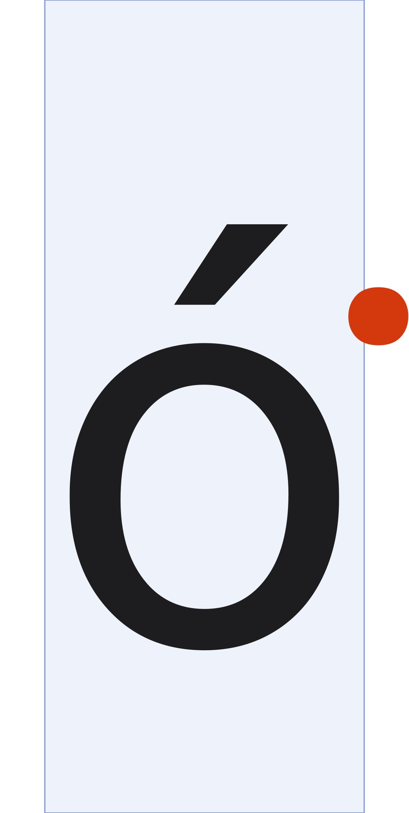
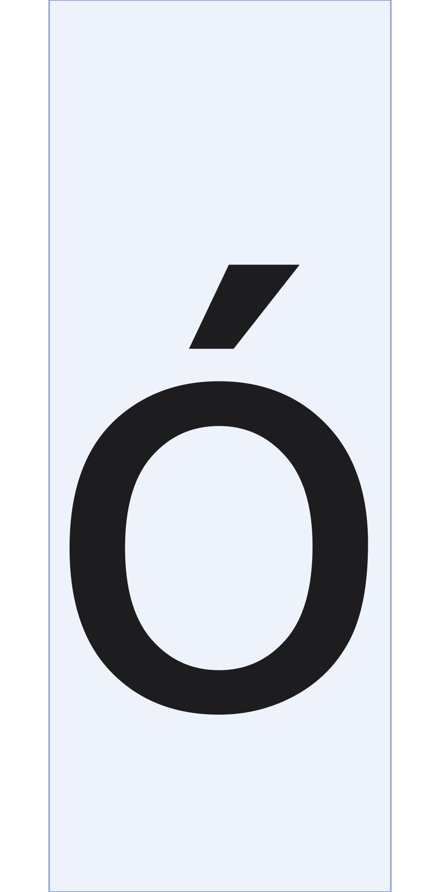

How fonts put the dot in the right place
The text says “o + tone + dot”. The font decides what that looks like. We found four different ways fonts do it.
In the pictures below, each box is the space a piece takes up on the line, and the orange part is a sticker the font placed separately. All four show ó͘.

A. Snap points
The o has a marked spot at its top right. The dot snaps onto it, like a magnet.
POJ Chhiu-ki, Source Sans 3

B. Ready-drawn letter
The designer drew the whole ó͘ as one picture. The font swaps the three pieces for it.
Lesson One, Huninn, Iansui, TASA

C. Dot with its own space
The dot takes a little room of its own after the o, so it can never touch the next letter.
Charis, Doulos, Gentium (SIL)

D. Printed in a fixed spot
The dot is drawn at one fixed place, whatever letter it follows. If that place is wrong, it is wrong every time.
Arial, Helvetica, Menlo
A. Snap points
The font designer marks an invisible point on each letter: “a tone goes here”, “the o͘ dot goes here”. The text engine moves each sticker onto its point. Font people call these points anchors.
Good: one dot works with every letter that has a snap point, so the font stays small.
Watch out: every letter needs its own snap point, including the ready-made toned ones like ō and ŏ. If the designer forgets one, the dot ends up in a strange place. Source Sans 3 does this for ŏ͘:

B. Ready-drawn letters
The designer draws o͘ ó͘ ò͘ ô͘ ō͘ o̍͘ and the capitals as finished pictures. When the font sees the pieces, it swaps in the finished picture.
Good: the designer controls every detail, so the tone and the dot never collide.
Watch out: the font must recognise every way the letter can arrive (see the same letter, written different ways). Anything it doesn't recognise falls back to the stickers, so it still needs snap points as a safety net.
C. Dot with its own space
The SIL fonts treat the dot almost like a tiny letter: it takes up a little width after the o.
Good: the dot can never crash into the next letter, as in o͘h or o͘ⁿ.
Watch out: words with o͘ get a bit wider. Copying text out of a PDF sometimes adds a space after the dot.
D. Printed in a fixed spot
The font has a dot, but no snap point for it, so the dot is drawn wherever its picture happens to sit. In Arial that is the gap after the letter. At best it suits one letter; on capitals and toned letters it lands in the wrong place.
When a font has no snap points at all, Chrome and Firefox try to guess where stickers go. The guess is fine for a plain o͘ but goes too high on Ó͘ and Ō͘, as the Helvetica example on the start page shows.
The best fonts use A and B together
Ready-drawn letters (B) for the common syllables, so they look perfect, plus snap points (A) as a safety net for everything else. Lesson One, jf open 粉圓, 芫荽 Iansui, TASA and WD-XL Lubrifont all work this way.
One more thing: hidden switches
Fonts can hide letter-building rules behind switches that are not always on. One of them, “ligatures”, is turned off when you add letter-spacing on a web page, and is off by default in Microsoft Word. A font that builds o͘ only behind that switch will break in those places. Good POJ fonts use the switch that is always on.